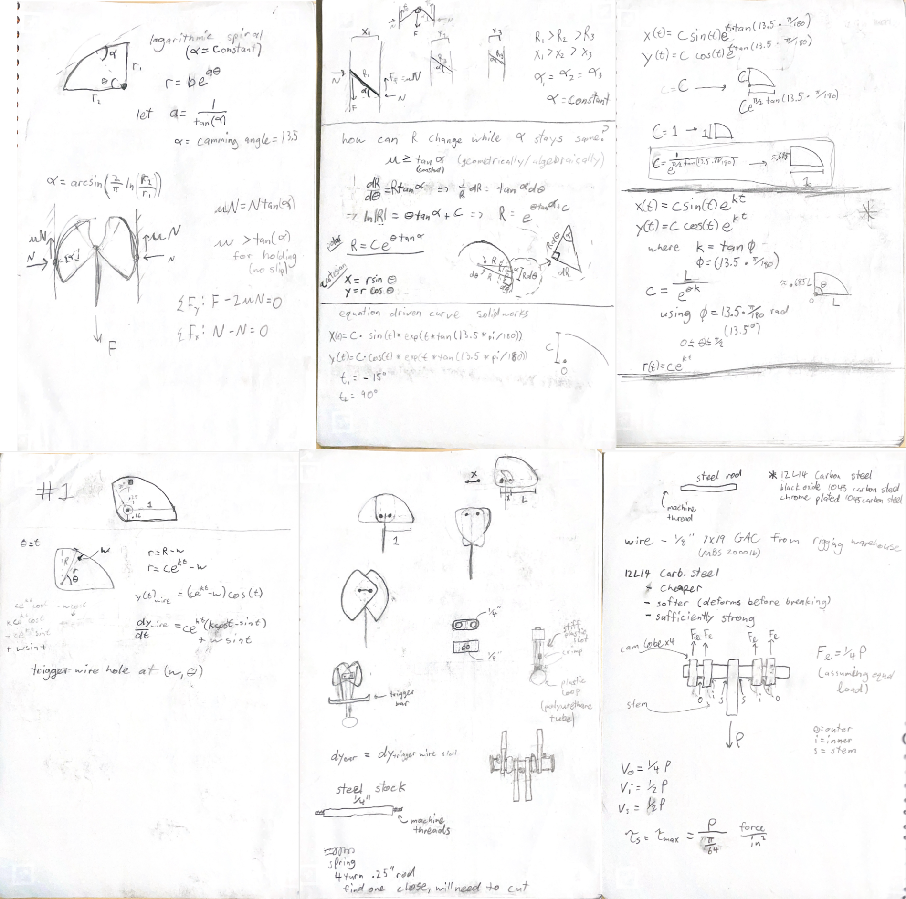

Homemade Cam
By Cole Rutkowski
THIS ENTRY IS INCOMPLETE
*Placeholder Image*

Why I started this Project:
As an engineering student and traditional climber, I had always looked at cams and thought “I could make this”. I am always looking for some project or hobby to keep me occupied and after learning some basics of Solidworks and machining, I decided I should try to make my own climbing gear!
Research
I began this project with extensive research on the history and design of cams. There is little formalized information on cams on the internet, so my sources consisted of reading a mixture of patents, research projects, and forums such as Mountain Project, UK Climbing, and SuperTopo. Through my research, I gathered a broad and full understanding of innovation in protective equipment since the invention of mountaineering as well as a mathematical understanding of these devices. I also researched and studied the materials, materials properties, and contact mechanics used in existing devices. Much of this information is spread out through my other reports and projects on this site. I then went on to derive my own designs and equations for Solidworks.
Notes on Cam Design
Prototypes
I modeled each part to be manufactured with a CNC mill and hand tools, which allowed me to use equation-driven curves and designs I could not make every component on a manual lathe and mill. After designing the main components, I put them in assembly and created drawings. I then 3D printed my first plastic prototype on a Prusa MK4 printer with great success. I was finally ready to manufacture my first real prototype.